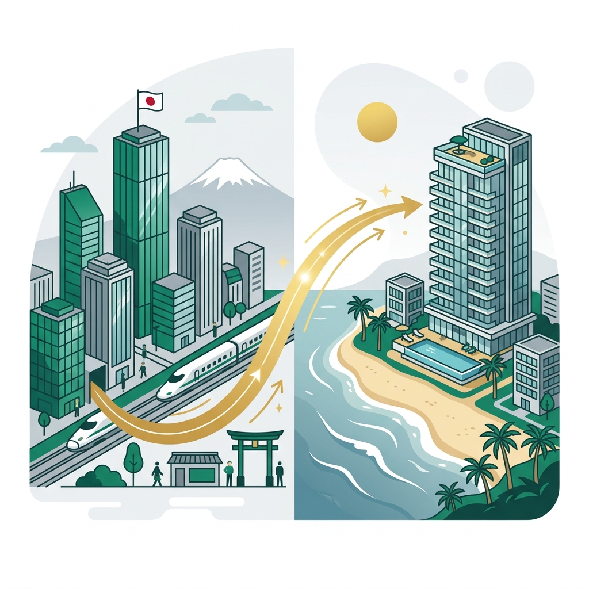

ライフプランの基本コンセプト
本計画書は、経営者ご夫婦の最大の願いである**「60歳までに所有と経営を分離する（日本法人は雇われ社長に承継し、株式によるオーナーシップは維持）」**と、**「ベトナム（ダナン）と日本の二拠点での豊かな生活」**を、国際税務上および法的に100%安全（完全ホワイト）なスキームで実現するための総合設計書です。
本シミュレーションは、現在の「倉庫賃貸不動産収入」および「低単価・低利益水準のソフトウェアテスト事業」の売上・収益力をベースに作成されています。実際には、今後の事業展開や単価改定により、両事業ともさらなる売上・利益の伸長が予定されていますが、計画書の確実性を高めるため、あえて成長による増益要因を一切織り込まない「極めて保守的（甘く見積もった）な最低ラインの数値」で設計しています。そのため、実際の60歳時点のキャッシュおよび総資産は、本計画よりも上振れる可能性が非常に高い設計となっています。

【計画全体像】日本で「守り」、ベトナムで「攻め・生活」を創る還流モデル
- ① 日本で資産を守る・溜める：既存事業の建物を法人へ移管し、地代で個人の日本の口座を維持。小規模共済・生命保険等で国内の安全資産を強固に構築。
- ② 毎年700万円をクリーンに還流：日本法人からベトナム法人へ「ITテスト・開発外注費」として送金。PEリスク等の税務リスクを完全排除。
- ③ 夫婦合計40万円の役員報酬を受給：低税率なベトナムで夫20万・妻20万を受給。家賃（月10万）と夫の医療費は法人の「社宅・福利厚生」で全額経費決済。
- ④ 豊かな生活と5%複利投資の両立：世帯手取り40万のうち、月20万円を個人投資信託（5%複利）へ積立。残り月20万円で贅沢なダナン現地生活を満喫。
- ⑤ 共済金を活かした還流ループ：4年毎にセーフティ共済（800万）を解約し、ベトナム送金400万＋日本消費400万で経費相殺。再加入して繰り返し積立を行う。
本計画によって得られる具体的なライフプラン効果
36歳〜60歳までの住民票転出による削減メリット累計
個人投資1.06億 ＋ 不動産1億 ＋ 日本側3,510万 ＋ 越法人3,200万
日越の物価・人件費差による生活費の差額累計（年約780万×24年）
日本法人の資産を維持しつつ、安全にベトナムと日本の個人口座に資金を還流させます。
- 倉庫建物の法人移管：土地は個人に残し、法人から地代（年105万）を個人に支払う。
- 個人口座の維持：地代収入から固定資産税（30万）と個人生命保険（ジブラルタ72万）を支払い、日本の口座を自動で維持・蓄積。
- 法人内の安全積立：経営セーフティ共済（年188万・上限800万）と法人生命保険（年36万）で簿外プールを構築。
- 日越往復航空券の経費化：航空券代は日本法人の「出張旅費」として損金処理。
日本から送られた資金を受け取り、税効率の最大化と、現地でのゆとりある生活、将来積立を行います。
- 日本からの外注送金：日本法人からベトナム法人へ年700万円を開発外注費として送金。
- 夫婦役員報酬の受給：夫・妻それぞれ月20万円（合計40万/年480万）を受給。現地所得税は実効約5.7%と低率。
- 経費での社宅決済：高級コンドミニアム家賃（年120万・光熱費込）をベトナム法人の「社宅経費」で全額決済。
- ゆとりバランス積立：世帯月40万のうち、月20万円を年利5%の投資信託で積立（60歳で約1億680万）。残り月20万円を贅沢な現地生活費へ。
【日本側】の収支・経費・国内積立シミュレーション
日本国内での課税・社会保険料を極限まで低く抑えつつ、法人資産と個人の口座を強固に守る設計です。
| エンティティ | 項目 | 金額 (年額) | 詳細・FP向け税務上の位置づけ |
|---|---|---|---|
| 日本法人 (売上: 1,458万) |
売上合計 | 1,458万円 | ソフトウェアテスト（684万円）＋ 倉庫賃貸（774万円） |
| 承継役員人件費 | 309万円 | 新社長（元従業員）の役員報酬 ＋ 法人負担社会保険料 | |
| 共済・保険積立 | 224万円 | 経営セーフティ共済（年188万 ★4年ローテーション積立） ＋ 法人生命保険（年36万） | |
| 他社・個人送金 | 805万円 | ベトナム法人外注費（700万） ＋ 夫土地使用地代支払（105万） | |
| 社用車維持費 | 60万円 | 新社長の移動・営業用として車を維持（月5万円） | |
| 税理士顧問料 | 36万円 | 日本法人の顧問税理士費用（月3万円 ★追加） | |
| 一般運営経費 | 24万円 | ソフトウェア利用料・雑費など（月2万円） | |
| 法人手残り(税引前) | 0円 | ➔ 売上と必要経費を完全に相殺し、日本国内での法人税発生を極限まで抑え込みます。 | |
| 夫個人口座 (日本側) |
地代収入 | 105万円 | 日本法人からの土地使用料（月8.75万円） ➔ 日本の個人口座に直接還流 |
| 固定資産税 | ▲30万円 | 土地にかかる固定資産税（経費・概算） | |
| 生命保険料支出 | ▲72万円 | ジブラルタ個人生命保険（月6万円） ➔ 地代収入で自動引き落としを完遂 | |
| 個人手残り | +3万円 | ➔ 役員報酬0でも日本の個人口座は黒字を維持し、枯渇を防ぐ。 |
🛫 二拠点往復航空券の日本法人経費化
日本とベトナムを往復する航空券代や現地出張費は、日本法人の「現地開発ディレクション出張」として旅費交通費（損金）で処理し、個人の生活費を圧迫しない設計とします。
🔄 経営セーフティ共済の4年サイクルローテーション
年188万円を積み立て、4.25年で上限800万円に達したら一時解約。解約手当金800万円（益金）の相殺として「ベトナムへの開発外注費追加送金400万円」＋「日本側消費（新社長賞与・社用車購入等）400万円」を同時に経費計上（損金相殺）して税負担をゼロにし、解約後すぐに再加入して積立を継続します。
【日本側】で積み上がる将来の安全資産（60歳時点予測）
解約・再加入を5回繰り返し、6回目の積立途中
年36万円払込 × 24年（払込総額864万）
年72万円払込 × 24年（65歳払込満了時）
➔ 日本側だけで、60歳時点で**合計約3,510万円**の安全資産を確保。さらに、地代還流の源泉である**日本国内の所有不動産（土地等：評価額約1億円）**を維持。これとは別に、共済解約金から累計**2,000万円**が国内で消費（社用車購入や従業員還元）に充てられています。
【ベトナム側】の収支・生活費・個人積立シミュレーション
日本からの開発外注費送金を原資として、現地でのゆとりある生活費の確保と、5%の積立投資を両立させます。
| エンティティ | 項目 | 金額 (年額) | 詳細・現地での生活実態 |
|---|---|---|---|
| ベトナム法人 (売上: 700万) |
売上（日本からの送金受入） | 700万円 | 日本法人からのシステムテスト・開発外注費（約11.6億VND） |
| 夫婦役員報酬（合計） | 480万円 | 夫報酬240万（月20万）＋ 妻報酬240万（月20万）/ 所得税PIT実効約5.7% | |
| コンドミニアム社宅家賃 | 120万円 | 高級社宅家賃（月10万・光熱費込）。法人経費として損金決済。 | |
| 維持費・医療保険 | 50万円 | 夫医療保険（年20万・福利厚生費） ＋ 会計税理士・維持費（年30万） | |
| 現地法人手残り利益 | 50万円 | ➔ 経常利益として毎年50万蓄積。さらに共済解約時に臨時外注費として計400万×5回（累計2,000万）が送金還流されます。 | |
| 個人マネー (夫婦合計月40万) |
世帯手取り総額 | 480万円 | 夫報酬月20万 ＋ 妻報酬月20万 |
| 個人証券口座積立額 | ▲240万円 | **月20万円を個人積立に回す** ➔ 年利5.0%で複利運用 | |
| 自由に使える現地生活費 | 240万円 | **月20万円を生活費・お小遣いとする** ➔ 家賃・医療費は別枠 |
🇻🇳 ダナン現地での生活レベルと物価差による削減効果（2026年基準）
* **生活コストの劇的な適正化**: ダナンで「高級コンドミニアム社宅（月10万・光熱費込）」に住み、「フルタイムシッター（月3〜5万）を雇用」し、「純生活費・レジャーに月20万」を使う贅沢な暮らし（合計月30万円）は、日本（東京・名古屋）で同水準の生活（ジム・プール付高級マンション家賃35万 ＋ フルタイムシッター25万 ＋ 贅沢な生活費35万 ＝ 合計月95万円）をした場合と比較して、**毎月約65万円（年間約780万円）の生活費削減**になります。
* **24年間の累計削減メリット**: 物価・人件費の差だけで、60歳までの24年間で**約1億8,720万円**相当の生活コストを自動的に削減していることになり、これが将来の1.7億円超の資産形成を支える最大の原資（エンジン）となっています。
【ベトナム側】で積み上がる将来の資産（投資・法人資産）
個人投資信託（月20万円 / 年利5.0%複利）の積立推移シミュレーション
📈 個人証券口座 (5%複利運用)
個人役員報酬からの積立（月20万円）を年利5.0%で24年運用し、60歳時点で**1億680万円**を形成します。
🏢 ベトナム法人内プール (不動産取得・事業投資原資)
毎年の法人経常利益蓄積（累計1,200万円） ＋ 日本の共済解約金からの臨時送金（累計2,000万円）を合算し、60歳時点で**合計3,200万円**の法人資産を確保。現地での不動産（土地）取得の原資とします。
➔ ベトナム個人投資（1億680万） ＋ 日本側不動産（1億） ＋ 日本側安全資産（3,510万） ＋ ベトナム法人資産（3,200万）により、
60歳時点で**世帯総資産は約2億7,390万円**規模（＋日本での還流消費2,000万円）に達します。
FP向け法的一貫性（エビデンス）とリスク対策
日越間の二国間税務および現地法制において、100%ホワイトかつ安全なエビデンスを元にした解説です。
【夫の滞在資格】配偶者TRC（一時滞在カード・最長3年更新）
奥様がベトナム人であるため、ビザ取得のための資金拘束（出資金）は不要です。ベトナム人配偶者を持つ外国人は、労働局への事前通知手続きを行うことで、**労働許可証（Work Permit）の取得が免除**されます。ベトナム法人から役員報酬を受け取ること、社宅の経費決済をすることは完全に合法です。
【従業員の滞在資格】労働許可証（Manager）＋労働TRC（2年）
将来社長を継いでもらう予定の従業員（日本人）は、出資金30億VND未満の投資家ビザ（DT4ビザ）での滞在では労働許可証の免除対象外（＝実質不法就労リスク）となります。そのため、ベトナム法人で雇用契約を結び、「管理職（Manager）」枠として労働許可証を取得し、労働TRCで滞在させることが最も安全かつ法的にホワイトなルートです。
夫は日本居住者（183日）を維持せず、住民票を転出して**「日本非居住者（ベトナム居住者）」**として正式に生活の本拠をダナンに置きます。日本の社会保険料（健康保険・厚生年金）が免除され、年金・保険料の負担は完全に0円となります。
【PE（恒久的施設）リスクの回避】
非居住者である夫が日本法人の意思決定をベトナム現地で行い、日本法人がベトナム法人に外注送金をする場合、日本税務署から「ベトナム法人が日本法人の実質的なPE（事業所）である」と認定されるリスクがあります。これを避けるため、「ITテスト・アプリ開発の実質的な実務開発」をベトナム法人が本当に行っているという実態（成果物、コードのログ、新社長との定期的な業務委託契約）を整備してPE課税を100%防ぎます。
【不動産の取得】
外国人が1%でも出資している外資系法人は、ベトナム国内の土地使用権（LUR）を市場から直接購入することができません。奥様（ベトナム人）が100%出資するローカル企業を設立することで、**ベトナム国内のすべての一般土地使用権（LUR）の市場での直接購入・所有**が可能になります。
【IT税制優遇（4年免税・9年半減）と区分経理の回避】
1つの法人でIT事業と一般事業（不動産賃貸等）を併業する場合、IT利益のみに優遇を適用するための「区分経理（別会計）」が必要となり、共通経費（オフィス家賃や役員報酬など）の按分比率を巡って税務調査で否認されるリスクが生じます。これに対し、奥様名義のローカル法人は維持・設立コストが安いため、**「ITテスト・開発専業会社（100%優遇享受）」と「不動産・その他ビジネス用会社（20%標準課税）」の複数法人を完全に切り分けて設立・運営**します。
日本法人の倉庫・工場（建物）を法人へ移管し、土地は夫個人に残したままで法人から夫に地代（年105万）を支払う際、税務署から「借地権の贈与（みなし贈与）」があったとして高額な課税を受けるリスクがあります。
これを回避するため、建物移管のタイミングで、日本法人と夫個人の共同名義で所轄 of 税務署へ**「土地の無償返還に関する届出書」**を提出します。これにより、将来土地を貸借関係の終了後に無償で返還することを誓約し、借地権課税を完全に無効化します。
【結論：今後も加入（開始）しない】
iDeCoおよび小規模企業共済は現在未加入（スタート前）状態です。日本の非居住者（ベトナム居住者）になると、日本国内での課税所得が地代収入（不動産所得）のみとなり、所得税・住民税が極めて低くなります。そのため、これらの制度の最大のメリットである**「掛金の全額所得控除による節税効果」がほぼ機能しません。**
また、非居住者化に伴う口座維持の手続きコストや、60歳以降の受取時の税制（退職所得控除等）の複雑さを考慮すると、日本国内でこれらの積立を新規に開始する必要性は一切ありません。制度を利用しない代わりに、浮いたキャッシュは全額、自由度の高い海外個人投資口座（年利5.0%運用目標）へ回し、機動的に運用する方針とします。
【第1層（現地）】グローバル民間医療保険
夫は年間約20万円のグローバル保険に加入し、ベトナムの高級国際病院（Family Medical Practice, Vinmec等）でキャッシュレス（窓口負担0円）受診します。ベトナム籍の妻と子は現地の公的/ローカル保険で対応します。
【第2層（日本帰国時）】国民健康保険の即日復活
難病や手術が必要になった場合は一時帰国し、実家に住民票を戻す（転入届）を行うことで、日本国籍者は**即日で日本の国民健康保険に再加入可能**です。3割負担および高額療養費制度を利用して最先端治療を受けられます。治療後は再度、海外転出届を出せば完了です。
二拠点生活・事業承継 実行タイムライン
グレーゾーンを一切排除し、順を追って進める3ヵ年実行スケジュールです。
- **妻の日本永住権（PR）獲得**: 永住権審査中は年間300日以上の日本滞在が必須なため、ベトナムへの「フライング移住」は厳禁。
- **既存の共同出資法人の整理**: 月2万の維持費を削減するため、株式譲渡で籍を抜くか、清算・廃業を進めます。
- **日本法人の倉庫・工場（建物）の移管準備**: 税理士との譲渡価額の合意と評価の精査。
- **倉庫の日本法人への譲渡実行**: 建物の登記変更。
- **土地無償返還届出書の提出**: 借地権の認定課税を避けるため、税務署へ即時提出。
- **地代の支払い開始**: 法人から個人の日本の口座へ地代（月8.75万）を支払い、ジブラルタ保険料の自動引き落とし体制を整備。
- **ベトナム新規ローカル法人（奥様100%）設立**: IT専業会社と不動産等の会社の複数設立。
- **夫の配偶者TRC取得**: 最長3年の滞在カード、および労働許可証免除手続き。
- **日本での転出届（住民票抜き）**: 日本非居住者化による社会保険料免除。
- **日本の不動産地代に対する確定申告のための「納税管理人（親族等）」の指定**（※iDeCoや小規模企業共済は非居住者化に伴う所得控除メリット消失のため、今後も新規加入・積立は行いません）。
- **従業員（役員予定）のビザ取得**: 労働許可証（Manager）および労働TRC（2年）の取得。
奥様の永住権（PR）取得審査は入管が厳しく出入国日数をチェックします。日本滞在が年間300日を下回ると居住実態のリセット（＝審査不許可）となります。フェーズ2への移行は、必ず「永住許可が下りた後」に実施してください。